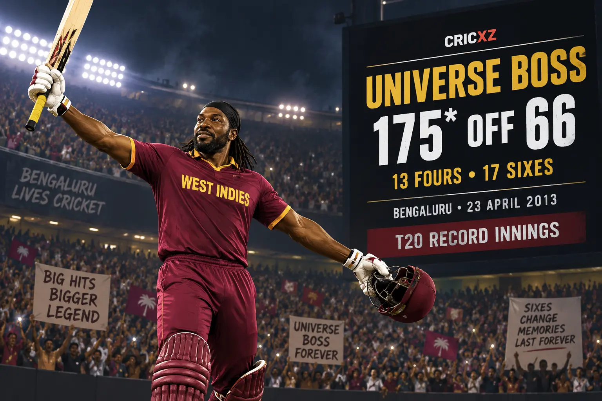

Test
- Matches
- 103
- Innings
- 182
- Runs
- 7,214
- Highest score
- 333
- Batting average
- 42.18
- Hundreds
- 15
- Fifties
- 37

Chris Gayle scored 19,593 international runs and 42 international centuries. Known as the Universe Boss, he became the first batter to reach 14,000 T20 runs and produced some of cricket's most powerful innings.
International career statistics are final.
Gayle's last international appearance came in November 2021. Figures were checked against ICC, Cricket West Indies and established statistical records.
Gayle was a dominant opener in every format. He made two Test triple-centuries, became the first batter to score an ODI World Cup double-century and transformed T20 batting through his extraordinary six-hitting and longevity.

On 23 April 2013 in Bengaluru, Gayle struck an unbeaten 175 from 66 balls, with 13 fours and 17 sixes. The innings remains the highest individual score in top-level T20 cricket and powered Royal Challengers Bangalore to 263/5 against Pune Warriors India.
Gayle scored 215 against Zimbabwe at the 2015 World Cup, the competition's first double-century. In franchise cricket he became the first batter to pass 14,000 T20 runs, while his 175* and 22 T20 centuries established a standard for power-hitting across leagues worldwide.
16 March 2000 – 5 September 2014
Debuted against Zimbabwe at Port of Spain and made his final Test appearance against Bangladesh in Kingston.
11 September 1999 – 14 August 2019
Debuted against India in Toronto and played his final ODI against India at Port of Spain.
16 February 2006 – 6 November 2021
Debuted against New Zealand at Auckland and made his final appearance against Australia in Abu Dhabi.
Scored 7,214 Test, 10,480 ODI and 1,899 T20I runs.
Made 317 against South Africa and 333 against Sri Lanka.
Recorded the first men's World Cup double-hundred in 2015.
Produced the format's landmark individual innings in Bengaluru.
Became the first batter to reach 14,000 runs in T20 cricket.
Scored 15 Test, 25 ODI and two T20I hundreds.
Was part of the West Indies squads that won in 2012 and 2016.
Set a benchmark for sustained excellence in franchise cricket.
Represented West Indies at five consecutive World Cups.
Led the Caribbean side during his international career.
CricXZ is an independent cricket publication and is not affiliated with the ICC, BCCI, Cricket West Indies or any franchise.
Read AB de Villiers' career records, explore Virat Kohli's statistics, or browse all CricXZ player profiles.